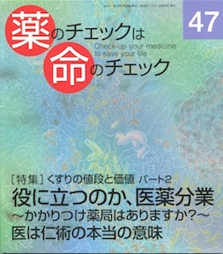

No.47 [特集] くすりの値段と価値パート２ 役に立つのか、医薬分業 2012年7月 発行
「医薬分業」って、なあに？、
むかしはね
お医者さんが薬で儲けている！
って言われたんだ。
だから、診療に専念してくださいって
20年くらい前に薬を取り上げたのさ。
じゃあ、薬は誰がもってるの？
薬剤師さんだよ。
薬の専門家だからね。
それで薬の費用は減ったんだね？
それが、ちっとも減っていないんだ。
薬の種類もね。
ふうん・・・なんでかなぁ？？？？
もくじ
Main Feature 特集 くすりの値段と価値 パートⅡ
◆くすりの値段を知っていますか？
薬価差益1兆3000億円はどこへ？ 隈本邦彦
◆薬価差益は製薬企業の懐に
「医は仁術」の意味を問い直す 松下一成
◆読者のみなさまも取材に応じているつもりでどうぞ！
◆医薬分業について、患者の立場から
くすりユーザーになる前の医師選び 笹倉尚子
自分で患者さんに説明したい 高木泰子
◆薬手帳・かかりつけ薬局とは？
疑義照会の意義と限界 中西剛明
「医薬協業」をめざそう 原 昌平
患者用くすりの説明書 浜 六郎
ジェネリックを処方しています 本田孝也
鼎談：医薬分業・非分業を考える
―――薬剤師の望ましいあり方は？
大里恭章（八尾徳州会総合病院 薬剤部長）、原田博雅（同病院 副院長）
浜 六郎（NPO 医薬ビジランスセンター代表、内科医）
Series 連載
■ 医師国家試験に挑戦しよう！⑬ 木元康介
■ コーヒー無礼区 坂口啓子
■ リレーエッセイ 生きるということ 岩田とみゑ
■ 新・市民の視点 東日本大震災と原発をどう考えるか 栗岡幹英
■ 医師国家試験の解答と解説
■ みんなのやさしい生命倫理(47) 生老病死⑰ 谷田憲俊
Others
■ 質問箱①ウイルスに効く抗生物質ってあるの？ないの？
②副作用判断のコツは？
③ロキソニンを評価しすぎでは？
④点眼薬は片方だけの使い方でもよい？
■ 読者の声
■ 次号予告
■ 書評
■ バックナンバー一覧 / 書籍申込用紙
■ 編集後記/奥付